No. 03 · 2026 · Habits and learning
Codeflow
Daily Coding Challenge
Make coding a daily habit.
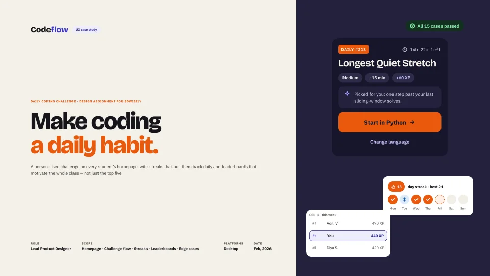
01 · The short version
One challenge a day, and a way back after a bad one.
A daily coding challenge for Edwisely’s student portal, designed to get every new student to a 7-day streak: learners who reach one are 3.6× more likely to finish their course (Duolingo). One challenge picked for each student, a streak that forgives a bad day, and leaderboards the whole class can win. A solo design assignment.
02 · The problem
Students practice in bursts, then disappear.
Most practice only in the weeks before exams and placement drives. Between those bursts, nothing gives them a reason to come back tomorrow.
Why it happens today
No clear next step
An open problem bank asks students to choose. Choosing is friction, and many leave without solving anything.
The wrong difficulty
Generic problems are too hard for beginners, who quit, and too easy for strong students, who get bored.
No reason to return tomorrow
Nothing records consistency, so skipping a day costs nothing and a routine never takes hold.
Competition that excludes
A single ranking motivates the top few and tells everyone else they are losing (JMIR Serious Games, 2021 (opens in a new tab)).
One slip ends everything
When a streak breaks with blame, “it’s broken anyway” turns a missed day into quitting (Silverman & Barasch, JCR 2023 (opens in a new tab)).
03 · Problem statement
Get every new student to Day 7.
04 · Research
A missed day doesn’t break the habit. Blame does.
One miss has no measurable effect on forming a habit (Lally et al., UCL (opens in a new tab)). How the product frames it decides whether people quit.
The recovery ladder from the research, and what Codeflow did with each rung
-
Before
Streak freeze
Insurance bought ahead, used automatically on a missed day.
In v1 Earned, not bought: one every 7 streak days, hold up to 2.
-
Planned
Pause or weekend pass
Protects known time off: trips, weekends.
Not in v1
-
Loyalty
Earned protection
Duolingo: 3 free freezes at a 100-day streak.
In v1 Freezes unlock at 7 days, not 100.
-
Just after
Earn it back
Extra work in a time window. Effort keeps the streak meaningful.
In v1 A two-challenge repair quest within 31 hours, once every 30 days.
Paid restore
Snapchat+: 1 free restore a month, more at a fee.
Cut A college portal has no wallet.
-
Long after
Revival campaign
Duolingo 2026: 30+ day streaks back after 3 lessons.
Later Needs a notification budget first.
-
Our fault
Auto repair
An outage? Fix the affected streaks silently.
In v1 Outages never break a streak.
Three proto-personas, built from the same research
-
The placement-chaser
3rd–4th year · high motivation
“I practice hard for a few weeks before every drive, then life takes over. I want to know where I stand.”
What the design gives them
- Picks from their weakest topic, medium–hard
- Department & college boards, leagues of 30
- ~15-minute challenge, one tap to start
-
The foundation-builder
1st–2nd year · still learning basics
“Most problems feel impossible, and seeing my name near the bottom makes me not want to open the app.”
What the design gives them
- Calibrated warm-up on Day 1, then easy-to-medium
- Hints that never break a streak
- Window boards, Most improved, section race
-
The slipping streaker
Any year · just missed a day
“I had 13 days and lost it to one bad day. Honestly, what’s the point of starting again?”
What the design gives them
- Auto freezes, earned every 7 days
- Repair quest (earn it back) once a month
- Best streak kept forever, one-tap restart
Personas and quotes are illustrative composites built from the desk research, not interview data, to be validated with student interviews.
05 · Roads not taken
Three tempting ideas, and why each lost.
Two came from the brief’s own first plan, one from the research. A finding or a constraint beat each of them.
-
01 The brief
Considered
A leaderboard toggle that lets students switch between full Class, Department and College rankings.
Instead
A full ranking for the class only. Department and college show a window around you plus a percentile, with leagues of 30.
Why it lost
A single ranking motivates the top few and tells everyone else they are losing (JMIR Serious Games, 2021 (opens in a new tab)). The brief itself asked for department and college boards that feel winnable, not discouraging.
-
02 The research
Considered
Paid restore, as on Snapchat+: one free restore a month, more at a fee.
Instead
An earn-back repair quest once every 30 days, and streak freezes earned every 7 streak days.
Why it lost
A college portal has no wallet, so nothing on the recovery ladder can be bought. Earning a streak back keeps it worth something.
-
03 The brief
Considered
Push notifications to trigger the daily habit loop.
Instead
The cue lives on Home: a dashed flame until today is solved. Plus one reminder a day at most, at a time the student picks.
Why it lost
The notification budget wasn’t agreed, so nothing in v1 depends on a push arriving. Revival messages wait for v2.
06 · The turning point
Pull them back daily. Catch them when they fall.
So the feature has two jobs. Every root cause gets a designed answer, and a reason it works.
Problem → solution map
| Root cause | What I designed | Why it works |
|---|---|---|
| 1 · No clear next step | One challenge pinned as the Home hero, the only dark surface on the page. Last language remembered; a single “Start in Python” button. | Removes the choice entirely. Visual priority makes it the first thing every session sees, on desktop and mobile. |
| 2 · The wrong difficulty | Picked from the student’s weakest active topic, with a visible “Picked for you” reason. Day 1 is an Easy warm-up that calibrates level. | Hard enough to grow, easy enough to finish. Showing the reason makes personalization feel fair rather than random. |
| 3 · No reason to return | Streaks with one glanceable state (dashed → lit), milestones at 3·7·14·30·100, a reminder at a chosen time and a “Commit to 7 days” goal at setup. | Loss aversion and explicit commitment. Learners who reach a 7-day streak are 3.6× more likely to complete their course (Duolingo (opens in a new tab)). |
| 4 · Competition that excludes | Full ranking only for the class. Department and college show a window around you plus a percentile; leagues of 30; weekly reset; Most improved; section race. | Everyone has a race they can win. Relative leaderboards outperform absolute ones for motivation (Li et al., 2024 review (opens in a new tab)). |
| 5 · One slip ends everything | Automatic freezes, an earn-back repair quest once a month, best streak kept forever, blame-free copy. Outages never break a streak. | A way to repair shrinks the drop-off after a miss; self-blame grows it (Silverman & Barasch, 2023 (opens in a new tab)). Earning it back keeps streaks meaningful. |
| 6 · Failing feels like punishment | Runs are free; hints never break a streak; a wrong answer offers Try again with “your streak is safe until midnight”; syntax errors don’t count. | Keeps students inside the task instead of abandoning it, at the moment a habit is most at risk mid-session. |
07 · The daily loop
One challenge, one tap, one lit flame.
A day for a returning student on Day 13: the cue, the action, the reward and the investment.
A day in the loop, step by step
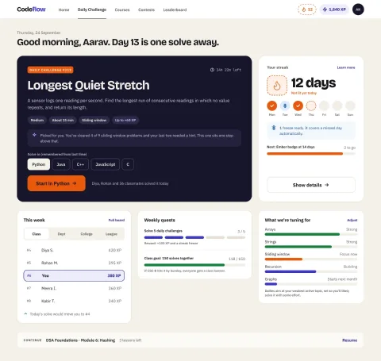
01 — Home: cue and actionOne dark card asks for a decision. The flame stays dashed until today is solved. 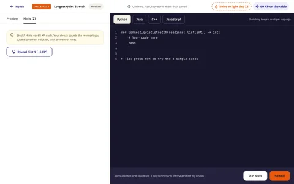
02 — Stuck? A hintHints cost 5 XP each. The streak counts with or without them. 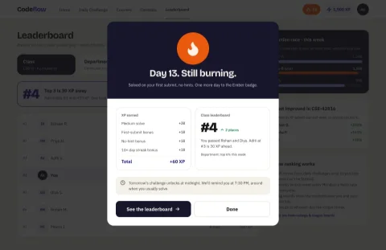
03 — Solved: the reward“Day 13. Still burning.” XP itemized, the rank move named. 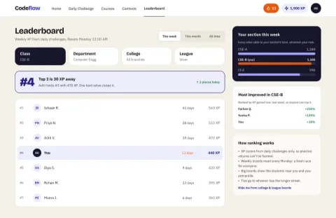
04 — LeaderboardA distance, not a verdict: “Top 3 is 30 XP away”. 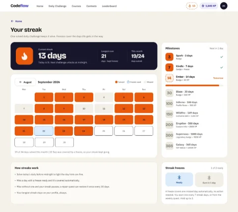
05 — Streak: the investmentA freeze-covered day reads as protected. The best streak is kept forever.
08 · Day 1
Day 1 is a warm-up and a promise.
Three choices in 30 seconds, an Easy first challenge, and a bigger first reward.
A new student’s first day
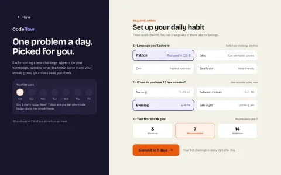
D1 — Habit setupLanguage, a reminder slot and a short first goal: “Commit to 7 days”. 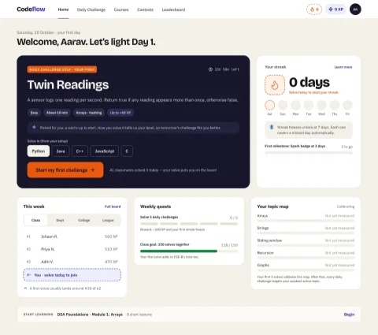
D2 — Home, Day 0Every module has an honest empty state. The first challenge is an Easy warm-up. 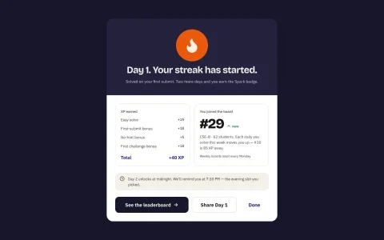
D4 — First solveA bigger first reward, and the board introduced gently: “You joined at #29”.
09 · When a day goes wrong
Every bad day has a way back.
A missed day, a wrong answer, an outage. None of them blames the student.
Six of the file’s states
The day after a miss
Paused, not gone
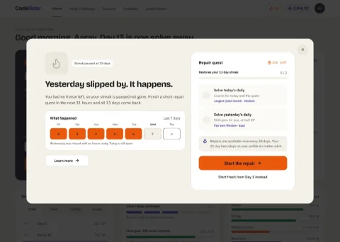
A7 — Streak pausedNo freeze left: a repair quest in 31 hours brings all 13 days back. 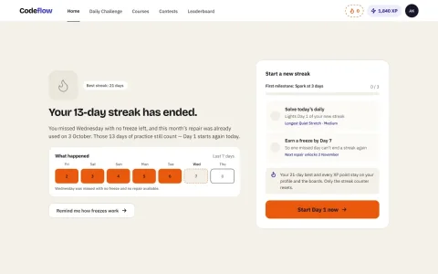
T4 — Streak endedNo blame. The 21-day best and all XP are kept, with a new first goal.
Mid-challenge
Try again, the streak is safe
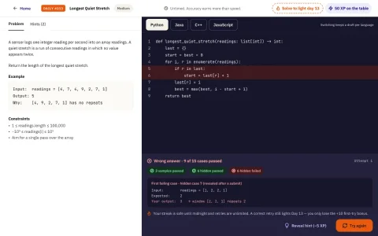
S4 — Wrong answerThe streak is safe until midnight; only the first-try bonus is lost. 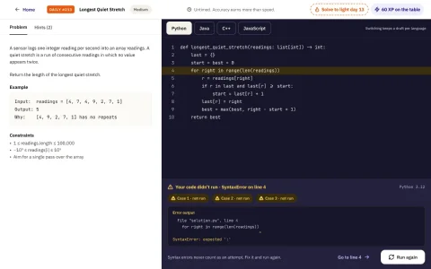
S5 — Syntax errorA parsed error with a line jump. Typos never count as an attempt.
Our fault, not theirs
Saved, queued, protected
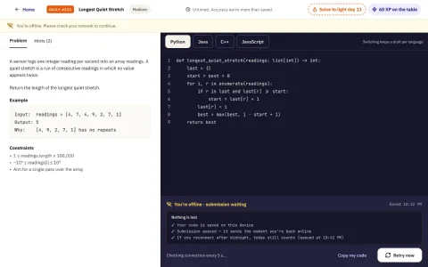
T1 — OfflineCode saved, submit queued, and today still counts after midnight. 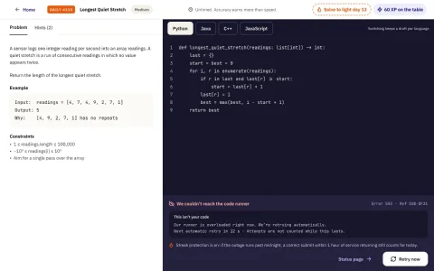
T2 — Runner down“This isn’t your code.” Attempts don’t count, and the streak is protected.
10 · The trade-off
Hints cost XP, never the streak.
A stuck student pays a little rank to stay in the task instead of leaving it. Hint use is a guardrail, and the hint’s price is an A/B test.
- −5 XP For each hint revealed
- 0 Streak days a hint can cost
- +10 XP No-hint bonus on a medium daily
11 · How we’ll know
Success is a new student reaching Day 7.
A design assignment, submitted and not built, so these are the measures I’d hold it to, not results.
-
North-star metric
Share of new students who reach a 7-day streak
The moment habit retention flattens, and so our onboarding goal.
-
Supporting
Day 7 and Day 30 retention · Daily solve rate (DAU) · Challenge completion
A/B: a 7- vs 14-day first goal, hint cost, class list vs window.
-
Guardrails
Churn among bottom-half ranks · Hint usage · Median time on challenge
Leaderboards must not push weaker students out; speed must not replace learning.
Built on a system: 67 color tokens over 46 primitives, 20 text styles, 25 icons, 17 components
-
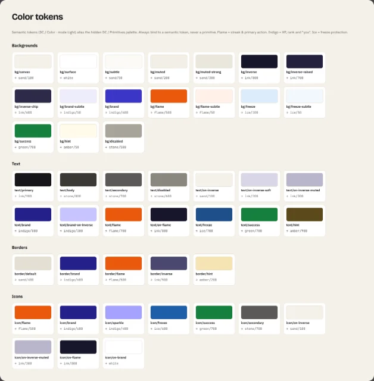
AColor tokens
-
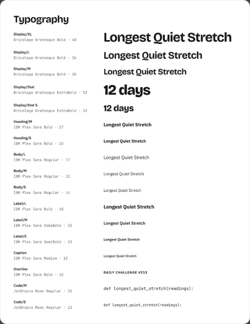
BTypography
-
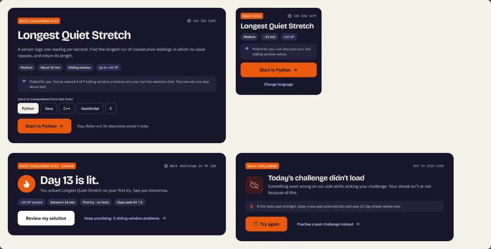
CChallenge card
12 · What’s next
Test the day after a miss first.
Nothing is built yet, so a moderated test comes before anything else. Then the questions v1 leaves open.
Validate
- Moderated test with 8–10 students across all four years, on their own machines, mid-semester rather than in a quiet week.
- Measure time to first keystroke, completion rate, and D1 / D7 return. The numbers that matter are the ones about coming back.
- Simulate a broken streak and watch what people do with it. That’s the screen the whole feature rests on.
Assumptions
- Difficulty is served from recent accuracy and language history. The matching logic was out of scope; the design only makes its reasoning visible.
- A streak day is a calendar day in college local time, and it closes at midnight.
- Notifications exist, but their budget wasn’t agreed, so nothing in v1 depends on a push arriving.
Open questions & v2
- Do shared or class streaks beat individual ones here? Social duty is the strongest lever in the research, and v1 doesn’t use it.
- Where does the streak sit next to assessments? Today the daily loop and the academic track don’t know about each other.
- Revival, once there’s a notification budget: what does a message to a student who left 30 days ago say, and does it earn the interruption?
13 · Reflection
A streak is only as strong as the day after it breaks.
Go deeper
The thinking lives in the Figma file.
This page is the short version. The file holds all of it: the brief, the research, every screen and state, and the ideas I parked.
Explore Figma file (opens in a new tab)
- Read the researchThe Streak Playbook: why people come back, the fragile moment and the recovery ladder.
- Follow the decisionsThe brief, the problem → solution map and how success would be measured.
- Walk every screenTwelve flow screens and ten states, at full size.
- Visit the dump yardA mobile web version, explored and parked.